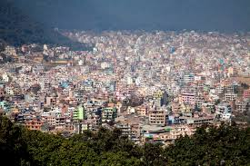

Kathmandu is not only the capital of the Federal Democratic Republic of Nepal, but also the headquarters of the Central Development Region of Nepal. The Central Region comprises three zones: Bagmati, Narayani, and Janakpur. Kathmandu is located in the Bagmati Zone. Kathmandu is the gateway to tourism in Nepal
